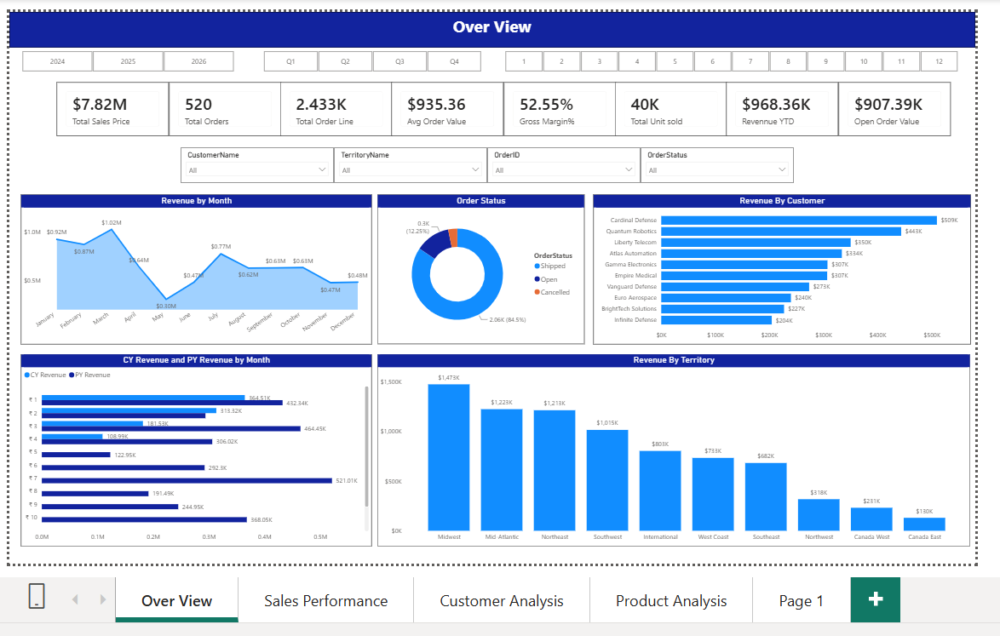
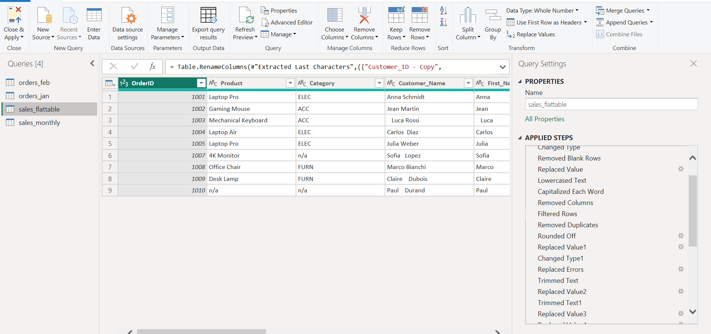

01 / ABOUT
A little about me.
I am a B.Tech Information Technology graduate from SNS College of Technology, passed out in 2025, with hands-on experience building Power BI reports, working with SQL queries and preparing data for analysis. I enjoy understanding business questions and presenting findings in a clear, useful way.
02 / TOOLKIT
Tools I work with.
Power BIDashboards · DAX · Reports
SQLQueries · Joins · CTEs
ExcelAnalysis · Reporting
PythonData analysis · Pandas
Power QueryData cleaning · Transformation
Data ModelingRelationships · Star schema
Data ValidationData accuracy · Reconciliation · Quality checks
Power BI ServicePublishing · Workspaces · Report sharing · Access management
Azure DatabricksSQL queries · Data transformation · Table creation
03 / EXPERIENCE
Where I've learned and contributed.
Data & Business Intelligence Intern
Analogyx BI Private Limited · Bengaluru, Karnataka
28 Mar 2026 – 06 Nov 2026
Completed an internship focused on Business Intelligence, data analysis and ERP-to-BI reporting, combining technical tools with business process knowledge.
Technical skills
Power BIPower BI ServiceSQLExcelPower QueryData ModelingData Validation
Epicor business process knowledge
Sales Order · Shipment · Manufacturing · Quality Inspection · Cost Analysis · COGS · COQ · Labor, Material & Overhead Cost · Order Value · ERP-to-BI Reporting Flow
04 / SELECTED WORK
Projects in focus.
A selection of analytics work, built to turn business data into clear and useful insights.
01
POWER BI PROJECT
Sales Order Analysis Dashboard
An interactive report exploring sales revenue, order performance, customer trends and product performance.
Power BIDAXPower Query
View Power BI Dashboard ↗

Open dashboard ↗
02
POWER BI · DATA MODELING PROJECT
Data Modeling & Data Cleaning
Prepared and organized raw business data using Power Query, created clean dimension and fact tables, and built a connected star-schema model for reporting.
Power BIPower QueryData ModelingData Cleaning
Project notes & key practices
- Explore before building: understand the business, entities, dimensions, facts and reporting needs.
- Build a star schema: dimensions provide context; fact tables record business events. Define the grain before creating each fact.
- Clean and standardize: combine, split, merge, append, fix and remove columns; use clear English names, snake_case,
dim_/fact_ prefixes and consistent keys.
- Validate the numbers: check important totals after changes, connect the required dimensions, and add a date dimension.
- Protect the model: apply row-level security where required and avoid unnecessary tables or columns.
View Power BI Dashboard ↗
03
POWER QUERY · DATA CLEANING PROJECT
Power Query Data Cleaning & Transformation
Prepared a sales dataset for analysis in Power Query by cleaning inconsistent values, removing duplicates and blank rows, standardizing text and data types, and shaping tables for reliable reporting.
Power QueryData CleaningData TransformationAppend & Merge
Project notes & key steps
- Connect and prepare: connect to data sources, promote headers and set the correct data types.
- Filter the dataset: remove unnecessary columns and blank rows, then filter records as needed.
- Clean values: remove duplicates; trim and standardize text; replace inconsistent values; and handle nulls, empty strings and whitespace according to the business rules.
- Transform columns: split and merge columns, extract required parts, and format or round values where appropriate.
- Combine tables: use Merge to bring matching columns together and Append to add rows from similar tables. Apply the appropriate join type.
- Reshape and finalize: use Pivot and Unpivot when the reporting layout requires it, then rename, reorder and remove unnecessary columns.
View Power BI Report ↗

Power Query transformations ↗